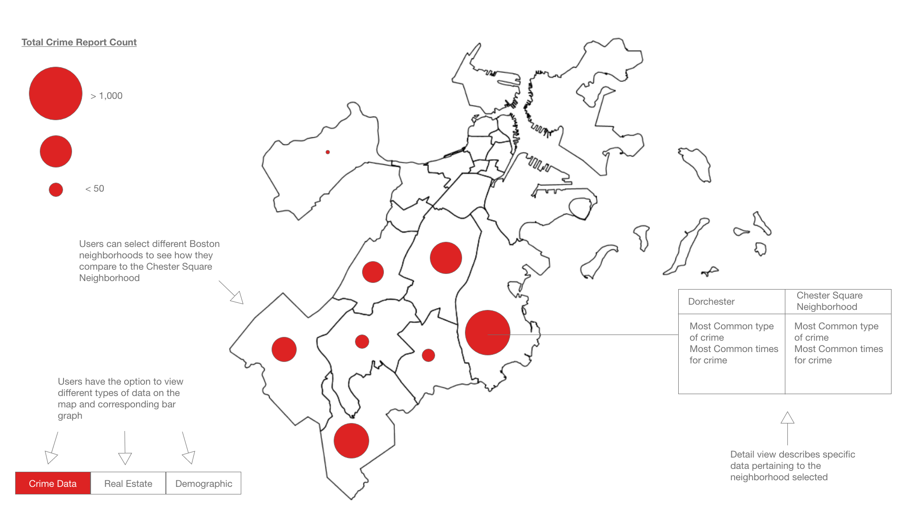
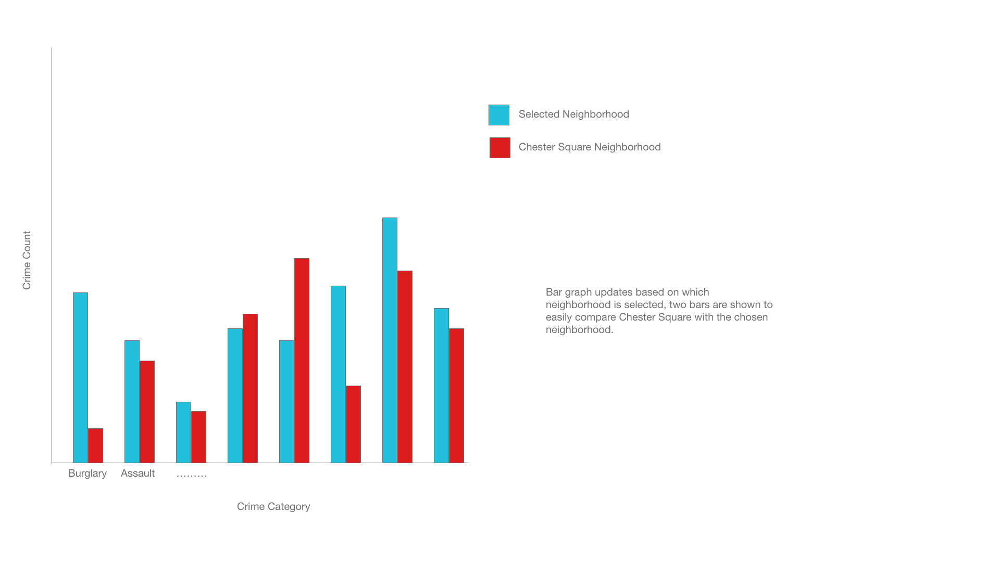
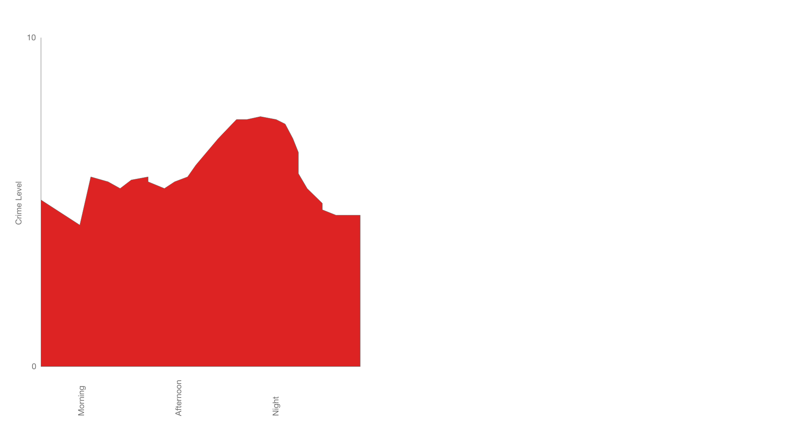
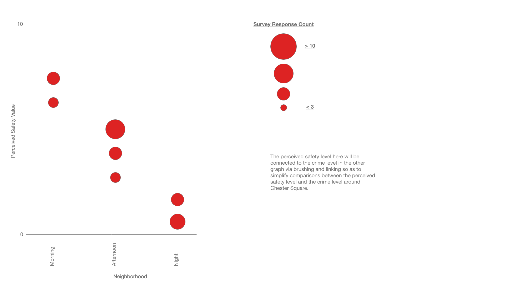

Karman Singh, Eric Chung, Edward Chung
Service-Learning Course Project as part of DS 4200: Information Presentation and Visualization, taught by Prof. Cody Dunne, Data Visualization @ Ktimey, Northeastern University.
For this project, we decided to focus on pedestrian safety and how to make the park more safe for both residents of the homes nearby and anyone walking by the park itself.
What we expect to find using the data visualization that we are creating is an addressable to trend in crime around Chester Square Park. We are using crime data as a stand-in for safety data as there is no usable dataset of safety levels around Boston.
Include the interactive visualization as part of this page. Static example follows.
Embedded MP4 demo video using the HTML5 <video> tag. For example, this screen recording Prof. Cody Dunne made of Mike Bostock's flexible transitions in D3 slide:
final visualization screenshots (PNG images), design justifications, UI walk-through, and linked presentation slides.
The primary dataset that we used was the Boston Crime dataset pulled from the Analyze Boston website. Due to the fact that the dataset was very large (over 450,000 entries) we did a lot of preprocessing using Python to aggregate the data ahead of time. For example, for the crime count by time chart, we ran a python script on the Boston crime dataset ahead of time to aggregate the data by time before displaying the data using D3.
Summary of data, data types, and data preprocessing. Expectation: Data sources match the problem statement and are appropriate. These descriptions should be very explicit so someone could read your page and properly reproduce your results.
Summary of task table.
Expectation: Clearly describes domain tasks, processes, goals and abstract tasks for domain problems.
We began our design process by looking at already existing visualizations of crime data for Boston. While looking at the visualizations, we
noticed that there was a common theme in that all of the already existing visualizations did not have good visual encodings and were overall very
unintuitive. A common problem was the color schemes for the visualizations were very poorly chosen. With this information in mind, we decided
that we would create a better crime map for Boston.
On top of creating a crime map, we also surveyed safety levels of residents around Chester
Square Park and plan to compare crime levels with perceived safety levels around the Park. We hope to find a correlation between crime and safety
around the park so as to use the crime dataset we have as an analog for Safety data. Originally we planned on our visualizations to look like the
following:
|  |  |
|  |  |
However, after looking at the visualizations more critically, we realized that size encoded circles were not the best way to show relative crime (and real estate prices). Ultimatley we chose to go with the shaded neighborhood regions instead as this was a more distinguishable use of color.
Sketches and design choices to justify final visualization.
Expectation: Evidence of iterative improvement. Logical discussion of design choices grounded in theory from course. Discusses feedback from usability testing.
Short summary of work completed and areas for improvement/future-work.
Expectation: Meaningfully wraps up project and has good future directions.
List here where any code, packages/libraries, text, images, designs, etc. that you leverage come from.